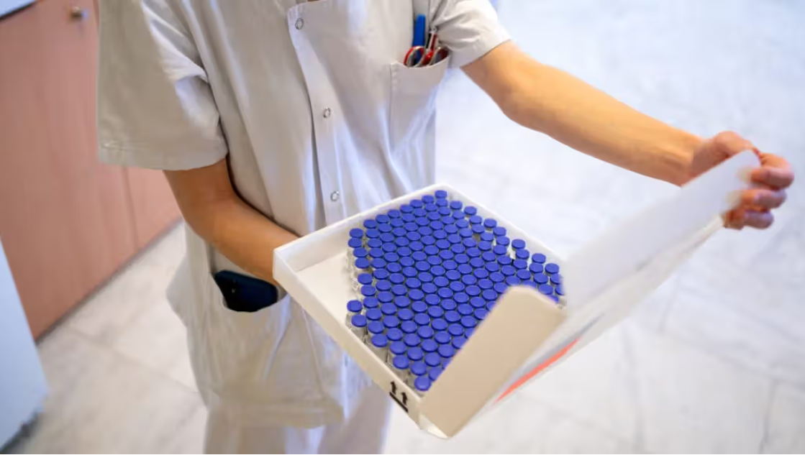

AI-designed vaccine tested in humans: what it means
A Medical News Today report examines a no-needle COVID vaccine designed with computational tools, and asks two experts how much of the hype is justified.

The story covers a vaccine candidate designed with help from computational biology and tested in people. The key point is not that AI independently created a medicine from start to finish, but that software helped researchers compare viruses and design an antigen intended to target shared weak spots.
That distinction matters. “AI-designed” can sound like science fiction, but vaccine development still depends on lab validation, animal work, human trials, safety monitoring, manufacturing, and regulatory review.
How the design process worked
The MNT article explains that researchers used computational methods to compare related coronaviruses and look for conserved parts of the spike receptor-binding domain. The goal was to focus the immune response on viral features that are less likely to change quickly.
Experts quoted in the source story framed the work as computer-aided vaccine engineering rather than fully autonomous invention. Biology still decides whether a design performs well enough to move forward.
Why this could matter
If the approach works, it could help researchers respond faster to future variants or related viruses. A broader vaccine would be valuable because viral evolution can make narrow vaccine targets less durable over time.
What remains uncertain
Early human testing is a milestone, not a final answer. Readers should watch for trial size, immune response durability, protection against infection or severe disease, side effects, and whether the vaccine can be produced and delivered at scale.
Source: Medical News Today, "'World-first' vaccine designed by AI tested on humans: Will it live up to the hype?" This Wellness Post page paraphrases and contextualises the report for student readers; it does not reproduce the original article in full.
Read the original at Medical News Today